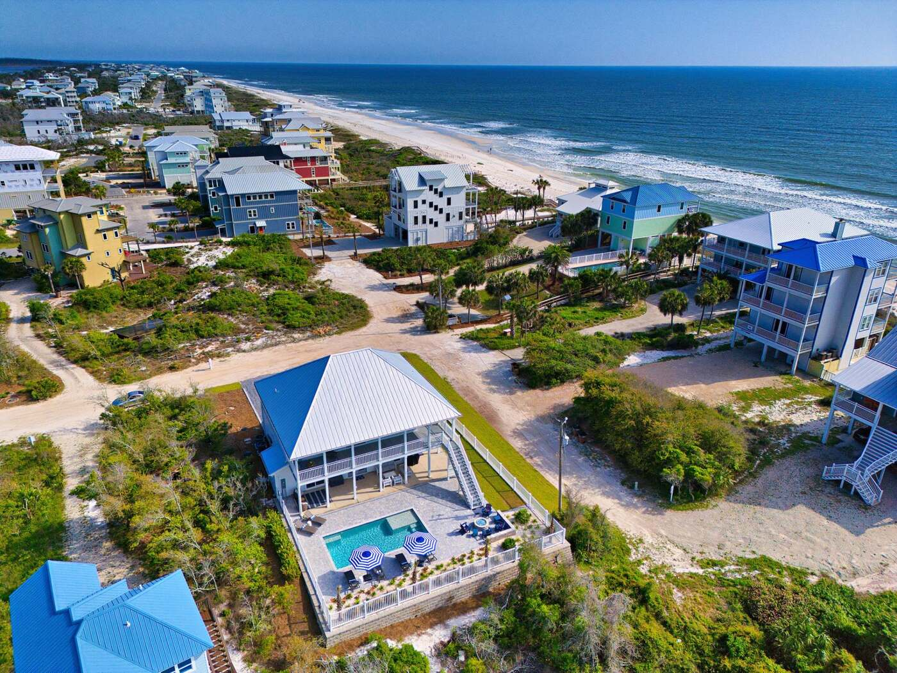

North Cape San Blas, Florida
Ocean Bliss
Six bedrooms, a private pool and the Gulf just across the street, on Florida's Forgotten Coast.
Check availability- 6 bedrooms
- 6.5 baths
- 16 guests
- Private pool
- 2 dogs welcome
The house
Ocean Bliss is a bright, coastal home in ocean blue and gray, built upside down so the best views go to the living space. Upstairs, the open kitchen, dining and living room open onto a wraparound porch looking out to the Gulf. Four bedrooms are on the ground floor beside the pool deck and two are upstairs, and every bedroom has its own bathroom.
Bedrooms
- 2 king bedrooms
- 2 queen bedrooms
- A bunk room with a twin-over-twin bunk and a full bed
- A bunk room with a twin-over-full bunk and a twin trundle
- Every bedroom has its own bathroom
- Smart TVs in the bedrooms
Outdoors
- Private pool on a fenced, paved deck
- Wraparound porch with Gulf views
- Fire pit, outdoor kitchen and grill
- Outdoor shower for after the beach
- Beach boardwalk across the street
Also included
- Open kitchen with a large island
- 75-inch smart TV in the living room
- Kayaks, paddle boards, cornhole and games
- Parking for 6 cars
- Up to 2 dogs, with a pet fee
Photos


Location
Ocean Bliss sits on North Cape San Blas, a quiet stretch of Florida's Forgotten Coast in Gulf County, with the beach boardwalk just across the street. Port St. Joe is a short drive for groceries and restaurants.
Plan your stay
Ocean Bliss is managed by 360 Blue. See dates, prices and book your stay on the house's 360 Blue page.
Check availability and book